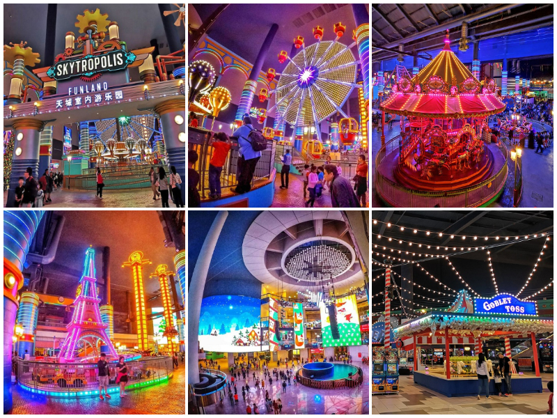
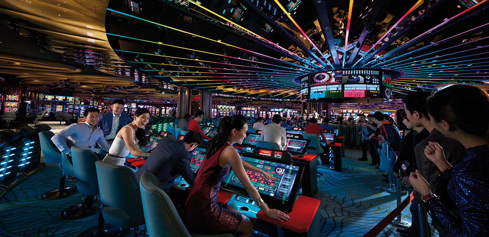
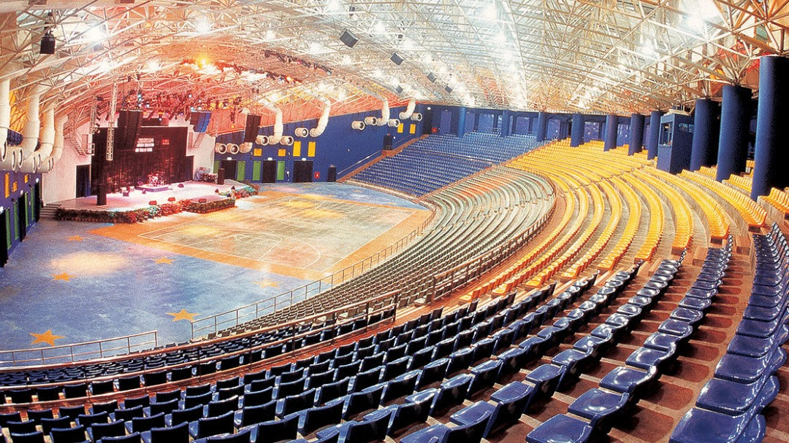

Back
Genting Highlands
Go to Bottom
Resorts World Genting originally known as Genting Highlands Resort is an integrated hill resort development comprising hotels, shopping malls, theme parks and casinos, perched on the peak of Mount Ulu Kali at 1,800 meters elevation near the border between the states of Pahang and Selangor, Malaysia.
The integrated hill resort is accessible by car within an hour's drive from Kuala Lumpur (about 35 km), or accessible by two different cable cars, Genting Skyway which at its opening was the world's fastest and South East Asia's longest gondola lift, and the newer Awana Skyway.
Attractions
Theme parks

Casinos

Amenities
- Arena of Stars is a concert hall with a capacity of 5,132 seats
- Genting International Showroom is a multimedia entertainment venue with up to 1,000 seating capacity.
- Bona Cinemas at SkyAvenue is their first cineplex outside China and consists of 6 cinema halls equipped with Dolby Atmos sound systems and IMAX theatre systems

Go to Top